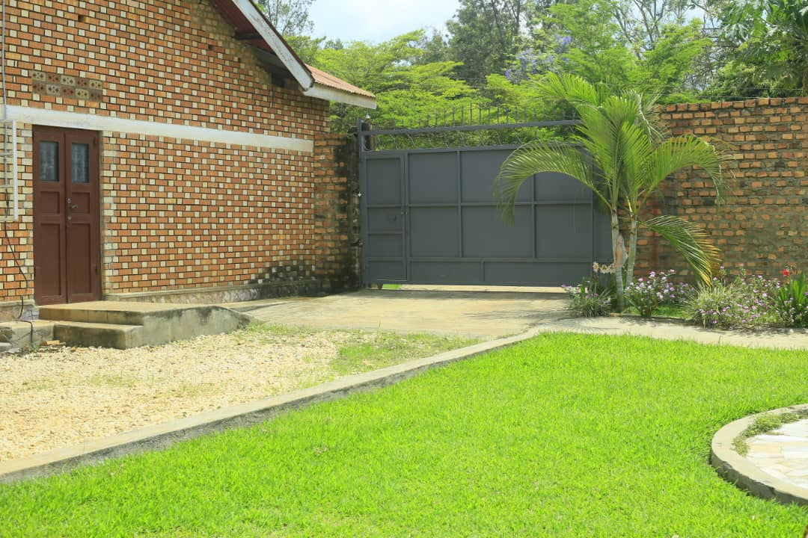
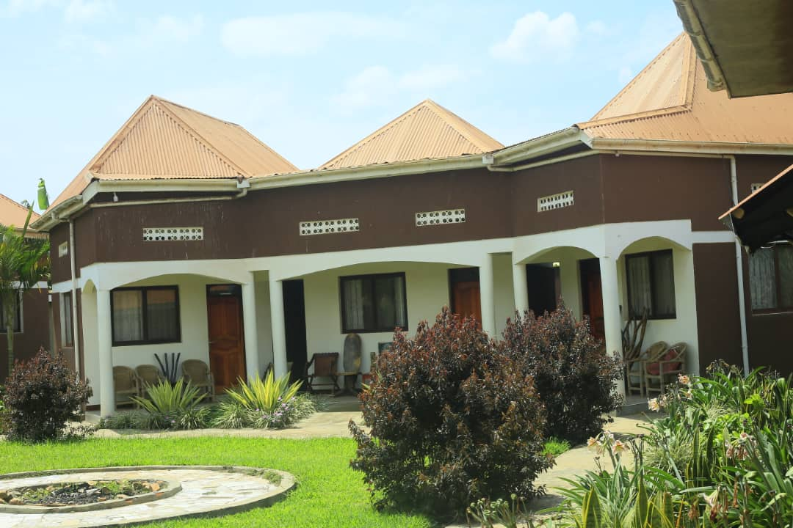
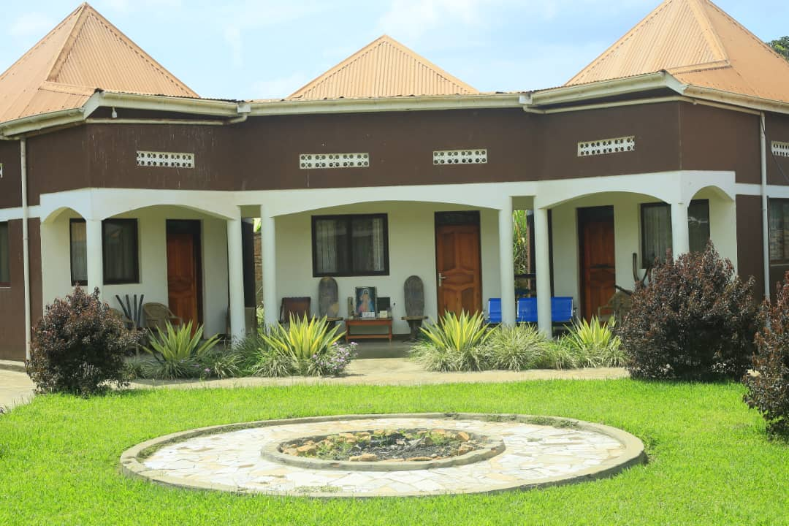
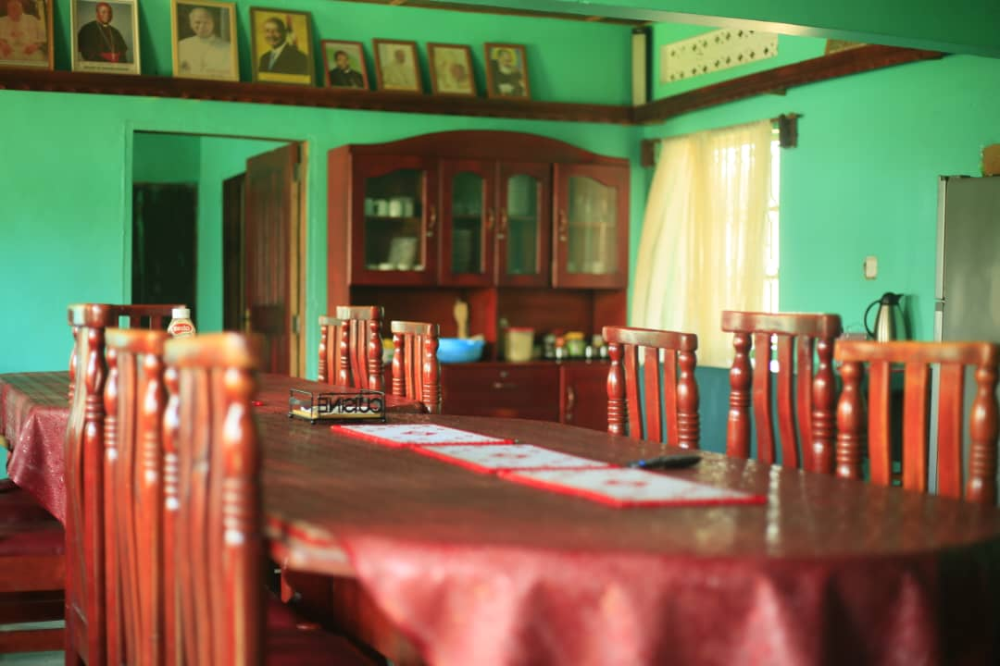
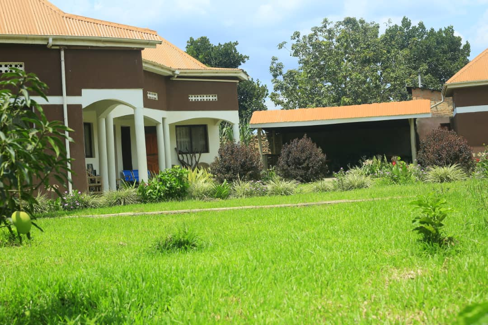
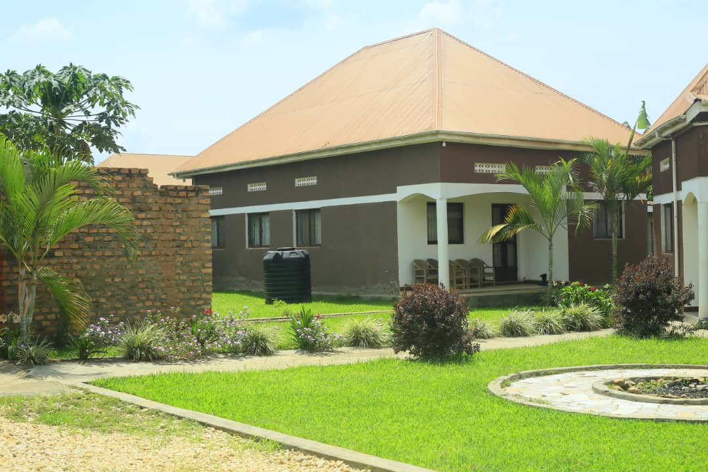

Comfortable accommodation, conference facilities, and catering in a peaceful setting.
Ssanje Parish Guest Inn offers comfortable accommodation in a serene environment, ideal for retreats, conferences, meetings, and leisure stays. Nestled in the heart of the parish, the guest inn provides a peaceful retreat away from the hustle and bustle of city life.






Start your day with a hearty breakfast featuring local and continental options.
Enjoy a midday meal with a variety of local dishes and fresh ingredients.
Wind down with a delicious dinner featuring traditional Ugandan cuisine.
Catering services available for events and conferences.
The guest inn is the perfect venue for a variety of events: